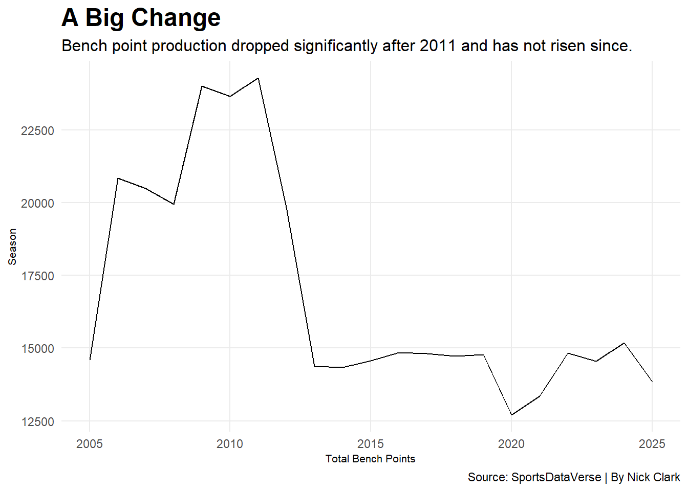
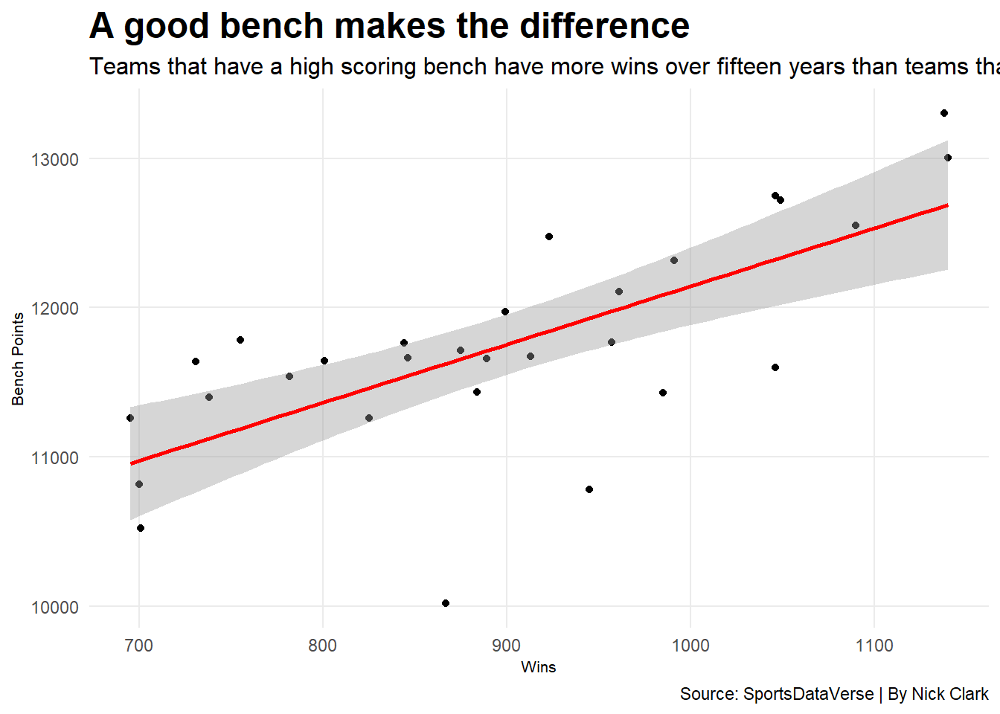

Code
library(tidyverse)── Attaching core tidyverse packages ──────────────────────── tidyverse 2.0.0 ──
✔ dplyr 1.2.1 ✔ readr 2.2.0
✔ forcats 1.0.1 ✔ stringr 1.6.0
✔ ggplot2 4.0.2 ✔ tibble 3.3.1
✔ lubridate 1.9.5 ✔ tidyr 1.3.2
✔ purrr 1.2.1
── Conflicts ────────────────────────────────────────── tidyverse_conflicts() ──
✖ dplyr::filter() masks stats::filter()
✖ dplyr::lag() masks stats::lag()
ℹ Use the conflicted package (<http://conflicted.r-lib.org/>) to force all conflicts to become errorsCode
library(hoopR)
library(gt)
nba_player_stats <- read_csv("data/nba_player_stats.csv")Rows: 718434 Columns: 57
── Column specification ────────────────────────────────────────────────────────
Delimiter: ","
chr (26): athlete_display_name, team_name, team_location, team_short_displa...
dbl (24): game_id, season, season_type, athlete_id, team_id, minutes, field...
lgl (5): starter, ejected, did_not_play, active, team_winner
dttm (1): game_date_time
date (1): game_date
ℹ Use `spec()` to retrieve the full column specification for this data.
ℹ Specify the column types or set `show_col_types = FALSE` to quiet this message.Code
team_stats <- read_csv("data/team_stats.csv")Rows: 53806 Columns: 57
── Column specification ────────────────────────────────────────────────────────
Delimiter: ","
chr (21): team_uid, team_slug, team_location, team_name, team_abbreviation,...
dbl (33): game_id, season, season_type, team_id, team_score, assists, block...
lgl (1): team_winner
dttm (1): game_date_time
date (1): game_date
ℹ Use `spec()` to retrieve the full column specification for this data.
ℹ Specify the column types or set `show_col_types = FALSE` to quiet this message.Code
bench_points <- nba_player_stats |>
filter(starter == FALSE) |>
filter(did_not_play == FALSE) |>
group_by(team_name) |>
summarise(total_bench_points = n()) |>
filter(total_bench_points >= 6000) |>
arrange(desc(total_bench_points))
bench_points_over_time <- nba_player_stats |>
filter(starter == FALSE) |>
filter(did_not_play == FALSE) |>
group_by(season) |>
summarise(total_bench_points = n()) |>
filter(total_bench_points >= 6000) |>
arrange(desc(total_bench_points))
team_wins <- team_stats |>
filter(team_winner == TRUE) |>
group_by(team_name) |>
summarise(total_wins = n()) |>
filter(total_wins >= 450) |>
arrange(desc(total_wins))
logs <- left_join(team_wins, bench_points)Joining with `by = join_by(team_name)`Code
ggplot() + geom_line(data=bench_points_over_time, aes(x=season, y=total_bench_points)) +
theme_minimal() +
labs(
y = "Season",
x = "Total Bench Points",
title = "A Big Change",
subtitle = "Bench point production dropped significantly after 2011 and has not risen since.",
caption = "Source: SportsDataVerse | By Nick Clark"
)+
theme(
plot.title = element_text(size = 18, face = "bold"),
plot.subtitle = element_text(size = 12),
axis.title = element_text(size = 8),
panel.grid.minor = element_blank()
)
Code
ggplot() +
geom_point(data = logs, aes(x=total_wins, y=total_bench_points)) +
geom_smooth(data = logs, aes(x=total_wins, y=total_bench_points), method = "lm", color = "red") +
theme_minimal() +
labs(
y = "Bench Points",
x = "Wins",
title = "A good bench makes the difference",
subtitle = "Teams that have a high scoring bench have more wins over fifteen years than teams that don't",
caption = "Source: SportsDataVerse | By Nick Clark"
) +
theme(
plot.title = element_text(size = 18, face = "bold"),
plot.subtitle = element_text(size = 12),
axis.title = element_text(size = 8),
panel.grid.minor = element_blank()
)`geom_smooth()` using formula = 'y ~ x'
Code
season_rankings_data <- nba_player_stats |>
filter(starter == FALSE) |>
filter(did_not_play == FALSE) |>
group_by(team_name, season) |>
summarise(season_bench_points = n()) |>
arrange(desc(season_bench_points))`summarise()` has regrouped the output.
ℹ Summaries were computed grouped by team_name and season.
ℹ Output is grouped by team_name.
ℹ Use `summarise(.groups = "drop_last")` to silence this message.
ℹ Use `summarise(.by = c(team_name, season))` for per-operation grouping
(`?dplyr::dplyr_by`) instead.Code
top_bench <- season_rankings_data |>
select(team_name, season, season_bench_points) |>
mutate_at(vars(-team_name), as.numeric) |>
group_by(team_name) |>
rename(Team = team_name) |>
rename(BenchPointsScored = season_bench_points) |>
rename(Season = season) |>
select(Team, BenchPointsScored, Season) |>
arrange(desc(BenchPointsScored)) |>
ungroup()
top_bench_new <- top_bench |> top_n(wt = BenchPointsScored, n = 10)
top_bench_new |>
gt() |>
cols_label(
BenchPointsScored = "Bench Points"
) |>
tab_header(
title = "Teams that represent a bygone era of basketball",
subtitle = "The Heat had the highest scoring benches in recent history before losing to the Mavericks in the Finals, who also had a high scoring bench."
) |> tab_style(
style = cell_text(color = "black", weight = "bold", align = "left"),
locations = cells_title("title")
) |> tab_style(
style = cell_text(color = "black", align = "left"),
locations = cells_title("subtitle")
) |>
tab_source_note(
source_note = md("**By:** Nick Clark | **Source:** hoopR: The SportsDataverse's R Package for Men's Basketball Data")
) |>
tab_style(
locations = cells_column_labels(columns = everything()),
style = list(
cell_borders(sides = "bottom", weight = px(3)),
cell_text(weight = "bold", size=12)
)
) |>
tab_style(
style = list(
cell_fill(color = "#98002E"),
cell_text(color = "white")
),
locations = cells_body(
rows = Team == "Heat")
)| Teams that represent a bygone era of basketball | ||
| The Heat had the highest scoring benches in recent history before losing to the Mavericks in the Finals, who also had a high scoring bench. | ||
| Team | Bench Points | Season |
|---|---|---|
| Heat | 1053 | 2006 |
| Heat | 971 | 2011 |
| Mavericks | 957 | 2011 |
| Cavaliers | 933 | 2009 |
| Celtics | 929 | 2010 |
| Magic | 929 | 2009 |
| Spurs | 929 | 2007 |
| Thunder | 923 | 2011 |
| Hawks | 912 | 2009 |
| Cavaliers | 903 | 2010 |
| By: Nick Clark | Source: hoopR: The SportsDataverse’s R Package for Men’s Basketball Data | ||